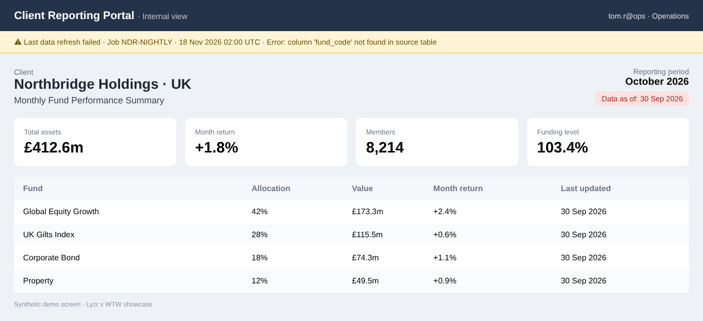

Lyzr Agent Studio · Session 1 build · IT operations
IT Issue Intake and Triage
A follow-along guide to building an agent that takes an IT issue a business user reports in plain language, works out what is wrong and how serious it is, checks it for compliance impact, and routes it to the right engineering team.
01
Overview
Live, we build one agent in Agent Studio that turns a business user's message into a correctly prioritised, compliance-checked ticket, routed to the right team. Then we hand the same problem to Architect and let it design a multi-agent system.
The problem. Issues reach IT as symptoms in plain language. Someone has to work out which system is affected, how serious it is, whether it creates a compliance risk and who should fix it. That takes hours or days and depends on who picks the ticket up.
What we build today.
- A single IT Issue Triage Agent in Agent Studio, built in three steps: instructions, knowledge and a tool.
- A prompt for Architect that turns the same problem into a multi-agent system.
What we leave for Session 2. Guardrails and hallucination controls, running and comparing the Architect system, and making it production-ready.
02
The problem
Tom works in Operations. He has a client call tomorrow, and the client's report looks wrong.
“Client reports are showing last month’s numbers, and the call is tomorrow.”
▣ tom_report_screenshot.png
Today this message waits in a queue. By the end of the build, the agent reads the screenshot, finds the failed data refresh, matches it to a past incident, flags the client data risk, and emails the right engineers, in under a minute.
03
Agent concepts
What an agent is made of
An agent is a service whose next step is decided at runtime by a model, not hard-coded. Everything around the model is something engineers already know.
How knowledge retrieval works
The settings that matter most: how documents are chunked, how many chunks come back (top-k), and whether results are reranked before the model sees them.
04
Architecture
One agent does the whole job. It reads the message and screenshot, looks things up in the knowledge base, decides, emails the owning team through Outlook and replies to the user.
05
Setup
The files
Six files, all synthetic. The systems, teams, incidents and rules were made up for the demo.
| File | What it holds | Goes into |
|---|---|---|
| 01_Systems_and_Ownership_Register.docx | Six systems, what each does, owning team, client jurisdictions and the dependencies between them | Knowledge base |
| 02_Team_Roster_and_Escalation.docx | Teams, tiers L1 to L3, routing emails and escalation rules | Knowledge base |
| 03_Runbooks.docx | RB-011 stale portal data, RB-014 account locked, RB-022 calculation differences, RB-030 slow portal | Knowledge base |
| 04_Past_Incidents.docx | Four past incidents with root cause, resolver and time to fix | Knowledge base |
| 05_Severity_Complexity_and_Compliance_Policy.docx | Complexity L1 to L3, priority P1 to P4, compliance rules CMP-01 to CMP-05 | Knowledge base |
| tom_report_screenshot.png | Client Reporting Portal showing October with September data and a failed refresh | Attach in chat for test T1 |

Knowledge base
- Go to Knowledge Base, click Create New, and create a knowledge base named IT Ops Knowledge.
- Upload the five .docx files.
- Set top-k to 5 and turn reranking on.
Tool
- Connect Outlook in the tools section, with permission to send email.
- Send a test email to one of your test inboxes before the session.
Check before the session
- Use a vision-capable model so the agent can read the screenshot. Temperature 0 to 0.2.
- Pre-build a finished copy of the agent as a backup.
- Run every test 3 to 4 times. Wording varies between runs; classification and routing should not.
06
Build the agent
We build the agent in one go, in three steps, then run Tom’s issue on the finished agent.
Instructions
Name, role, goal and instructions. This is the spec the agent works to.
Knowledge
Attach IT Ops Knowledge so every fact comes from WTW’s own documents.
Tool
Connect Outlook so the agent can email the team it routes to.
Follow these steps for every issue:
1. UNDERSTAND
- Read the user's message and any attached screenshot. Treat everything visible in the screenshot as known: system name, client, region, dates and error messages. Never ask the user for something the screenshot already shows.
- If you cannot identify the affected system, ask the user up to 3 short follow-up questions before triaging.
- If the system is known but the impact or urgency is unclear, do not ask. Triage using the knowledge base (for example, check which other clients or systems depend on the failed component), state your assumptions and list what the user should confirm.
2. INVESTIGATE (use the knowledge base for every fact)
- Identify the affected system and its owning team from the Systems and Ownership Register.
- Check dependencies. If the symptom is in one system but the likely root cause is in another, say so.
- Find matching past incidents and the relevant runbook.
3. ASSESS
- Assign complexity (L1, L2 or L3) and priority (P1 to P4) using the Severity, Complexity and Compliance Policy. Give a one-line reason for each.
- Check every compliance rule (CMP-01 to CMP-05). List each rule that applies with its rule ID and required action, or write "None".
4. ROUTE
- Route to the team that owns the likely root cause, at the tier matching the complexity. Copy the team that owns the symptom if different. If any compliance rule applies, also copy Client Data Governance.
- Use the Outlook tool to email the routed team the triage summary.
5. RESPOND
Reply to the user in two parts.
Part A, for the user, plain language, 3 sentences at most: what is likely wrong, who has it, and what happens next.
Part B, triage summary:
- Issue: one technical line
- Affected system / likely root cause:
- Complexity: L_ and reason
- Priority: P_ and reason
- Compliance flags: rule ID, flag, action (or None)
- Routed to: team, tier, email. Copied:
- Similar incidents:
- Next steps: start with the runbook ID and its first steps
- Assumptions to confirm:
- Sources: documents used
RULES
- Only use facts from the knowledge base, the user's message or the screenshot. If something is in none of them, write "Not found in knowledge base".
- The same issue should always get the same complexity, priority and routing.07
Tests
Click a test to open it. T1 is the main demo.
T1Tom’s stale client report
Client reports are showing last month's numbers, and the call is tomorrow.Expected outcome
- System
- Client Reporting Portal. Root cause in the Nightly Data Refresh: NDR-NIGHTLY failed on the missing fund_code column, so CRP still shows 30 September data.
- Assessment
- L2, a fix within one system. P2, client-facing with a call within 48 hours. P1 is also acceptable if it reasons that every CRP client is affected and says so.
- Compliance
- CMP-01 client data accuracy. Notify Client Data Governance within 24 hours.
- Routed to
- Data Engineering L2, copying Reporting Platform L2 and Client Data Governance. Email arrives.
- Cites
- INC-2291 and RB-011.
- Pass if
- It doesn’t ask which system, and it says not to rerun the job before the schema is fixed (RB-011 step 3).
- Teaching point
- The symptom is in one system and the cause in another. The agent routes to the cause.
T2Locked out of TimeTrack
I can't log in to TimeTrack since this morning, it says my account is locked.Expected outcome
- Assessment
- Identity Platform. L1, P4. Compliance: none.
- Routed to
- Service Desk, following RB-014. May cite INC-2310.
- Pass if
- No over-escalation. It treats a simple issue as simple.
T3Wrong benefit figures after a release
Benefit statements generated today for our German clients show retirement amounts about 3% higher than last month. A release went out last night.Expected outcome
- System
- Benefits Calculation Engine, flowing into DocGen statements.
- Assessment
- L3, P1. Wrong financial figures delivered to members.
- Compliance
- CMP-02 financial accuracy.
- Routed to
- Calculation Services L3, copying Reporting Platform and Client Data Governance.
- Next steps
- RB-022, starting with pausing DocGen statement runs. Cites INC-2347.
T4Not enough to go on
The portal is really slow.Expected outcome
- Answer
- Asks which portal, since when, and who is affected, as RB-030 suggests. No triage yet.
- Teaching point
- It asks when it genuinely can’t tell, instead of guessing.
T5Two issues in one message
The Northbridge client report is still showing September data, and German benefit statements look about 3% too high since last night's release.Expected outcome
- Ideal
- Two separate triages: CRP and NDR at P2 to Data Engineering, BCE at P1 to Calculation Services, each with its own compliance flag.
- What often happens
- One agent blends them, or gives the second issue less attention.
- Teaching point
- The bridge to multi-agent. Run it beforehand; use it live only if the single agent slips.
08
Why multi-agent
The single agent works. The question is what happens when it meets production.
The demo today
In production
Maker and checker
The agent that decides is not the one that approves.
Change one part safely
A new rule touches one agent, not one giant prompt.
Right model for each job
Fast and cheap to read, stronger to judge.
See where it failed
Traces show which step went wrong, not just the final answer.
One agent is the right choice for simple, contained jobs. Go multi-agent when the work grows, the rules change, or someone needs to audit the decision.
09
Architect prompt
We describe the problem and the outcome, not the agents. Architect decides how to split the work. We look at what it designed, and run it in Session 2.
Build an IT Issue Intake and Triage system for WTW's IT organisation.
THE PROBLEM
Business users (operations, client service, finance) report IT problems in plain language, often with a screenshot. Today these reports sit in a queue until someone works out what the issue is, how serious it is, whether it creates a compliance risk, and which engineering team should fix it. This takes hours or days and depends on who picks it up.
WHAT THE SYSTEM SHOULD DO
1. Take an issue report from a business user in chat, in plain language, with an optional screenshot.
2. Read any attached screenshot and pull out error messages, the affected system, the client and region, and any dates shown. Never ask the user for something the screenshot already shows.
3. If the affected system cannot be identified, ask the user up to 3 short follow-up questions before triaging. If the system is known but the impact or urgency is unclear, triage anyway, state the assumptions and list what the user should confirm.
4. Turn the report into a clear technical description of the issue.
5. Identify the affected system, its owning team and its dependencies. If the symptom appears in one system but the likely root cause is in another, say so.
6. Find similar past incidents and the relevant runbook.
7. Assign a complexity level (L1, L2 or L3) and a priority (P1 to P4) using the policy in the knowledge base, with a one-line reason for each.
8. Check the issue against every compliance rule in the policy (CMP-01 to CMP-05). List each rule that applies with its rule ID and required action, or state that none apply.
9. Check every finding against the knowledge base before anything goes out. Remove anything not supported by a source. Flag P1 issues and low-confidence results for human review.
10. Route the issue to the team that owns the likely root cause, at the tier matching its complexity. Copy the team that owns the symptom if different, and copy Client Data Governance whenever a compliance rule applies.
11. Email the routed team the full triage summary through Outlook.
12. Reply to the business user.
KNOWLEDGE BASE
Five documents: Systems and Ownership Register, Team Roster and Escalation, Runbooks, Past Incidents, and IT Issue Severity, Complexity and Compliance Policy. Use only these documents, the user's message and the screenshot as sources of fact.
OUTPUT
The reply to the user has two parts:
A) A plain-language answer of no more than 3 sentences: what is likely wrong, who has it, and what happens next.
B) A triage summary with: issue, affected system and likely root cause, complexity with reason, priority with reason, compliance flags with rule IDs and actions, routed team and tier with who is copied, similar past incidents, next steps starting with the runbook, assumptions to confirm, and the sources used.
The email to the engineering team contains the triage summary.
RULES
- If information is not in the knowledge base, the message or the screenshot, say "Not found in knowledge base" rather than inventing it.
- The same issue should always get the same complexity, priority and routing.Next session
- Open the system Architect designed and walk through its agents.
- Run Tom’s issue and T5 through it, side by side with the single agent.
- Add guardrails and hallucination controls in Studio, and make it production-ready.